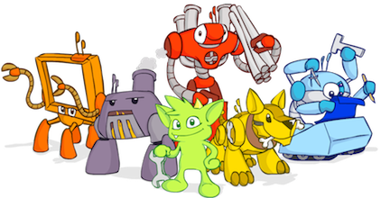

Communauté Nantaise des Utilisateurs de JavaScript
NantesJS est un groupe nantais informels entre utilisateurs et passionnés de JavaScript/ECMAScript. Son but est de favoriser les échanges et rencontres des utilisateurs/développeurs autour de cette technologie, de ces possibilités, de son avenir...
Les Rencontres JS nantaises
La première rencontre a eu lieu en Janvier 2012.
Depuis cette date, les rencontres se sont faites sur une base irrégulomadaire.
Pour l'année 2015/2016, les rencontres se dérouleront
1 fois par mois, le 3e jeudi du mois !
Des lightnings talks de 5 minutes seront proposés tous les mois.
Ceux-ci sont soumis au vote peu avant la rencontre.
Les collations sont toujours les bienvenues (sponsors et autres donateurs anonymes, n'hésitez pas à vous manifester :)
Meetup 12
17/09/2015 à 19h
@ Atelier Iceberg (Péniche le Hu-Blo)
Quai de Versailles - 44000 Nantes (Arrêt de tramway Saint-Mihiel)
Votez pour les prochains lightning talks !
Meetup 11
17/03/2015 @ La Cantine Meetup 06
15/10/2013 @ Clever AgeMeetup 05
18/04/2013 @ KNPLabsMeetup 03
21/03/2012 @ La CantineMeetup 02
15/02/2012 @ La CantineJavaScript autour du monde
Et ailleurs
CommunityJSJavaScript ressources
Parce qu'un peu de lecture ne fait jamais de mal, une petite sélection
de liens web "back 2 basics" en attendant la prochaine rencontre !